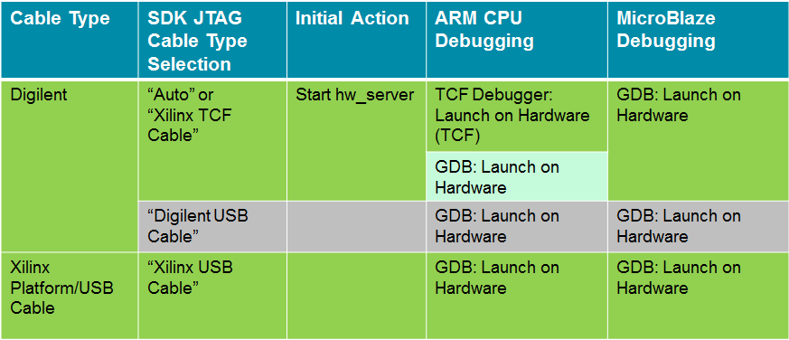

Recommended Debugger Usage
- Recommended Usage: Green
- Less preferred: Light green
- Not Recommended (but supported):Gray
Note: Recommend usage for the Digilent cable uses two different debuggers
– TCF debugger for ARM and GDB for MB


SDK TCF Debugger
Copyright 1995-2013 Xilinx, Inc. All rights reserved.